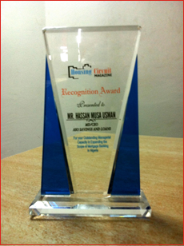
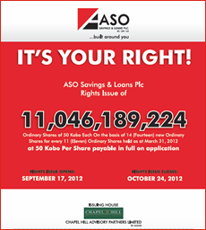
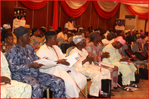
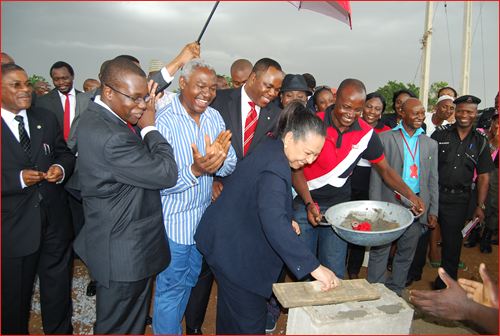
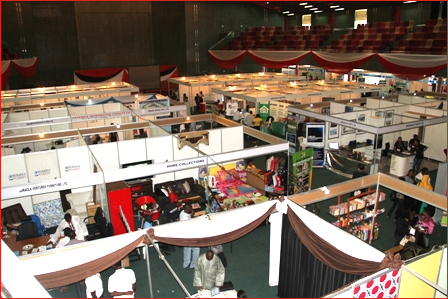

2012
click to expand/collapse
-
ASO/AIDC Completes 200 Affordable Housing Units in Cross River State December 11, 2012
-

Hon. Minister of Lands, Housing & Urban Development Ms. Ama Pepple commissioning the ASO Savings and Cross River state Government's Public Servants Housing Scheme, CROSPIL Estate, in Akpabuyo Local Government, Calabar on Monday December 10, 2012. She is supported to the left by the Acting Governor of Cross River State, His Excellency Barrister Efiok Cobham and to the right, clapping is the Managing Director of ASO Investment and Development Company, Isoken Omo. Hon. Minister of Lands, Housing & Urban Development Ms. Ama Pepple, handling over keys to a beneficiary of a 3-Bedroom house, after the official commissioning of the 200 units of the first phase of 610 Housing Units of ASO Savings and Cross River State Government’s Public Servants Housing Scheme, CROSPIL Estate, in Akpabuyo Local Government, Calabar on Monday, December 10, 2012 Hon. Minister of Lands, Housing & Urban Development Ms. Ama Pepple cutting the tape, supported to the left by the acting Governor of Cross River State, His Excellency Barrister Efiok Cobham and to the right, Managing Director of ASO Investment and Development Company, Isoken Omo, at the official commissioning of the 200 units of the first phase of 610 ASO Savings and Cross River state Government’s Public Servants Housing Scheme, CROSPIL Estate, in Akpabuyo Local Government, Calabar on Monday, December 10, 2012. L-R, Managing Director of ASO Savings & Loans Plc Mr. Hassan Musa Usman, Chairman, ASO Investment and Development Company (AIDC), Mr. Collins Chikeluba, and the Managing Director of AIDC, Mrs Isoken Omo after the successful commissioning of 200 units of the first phase of 610’s ASO Savings and Cross River state Government’s Public Servants Housing Scheme, CROSPIL Estate, in Akpabuyo Local Government, Calabar on Monday, December 10, 2012 It was with a great sense of pride and joy that ASO Savings & Loans Plc in collaboration with its subsidiary Company, ASO Investment & Development Company, handed over the first phase of the completed 200 units of a total of 610 Housing units of the Cross River state Government’s Public Servants Housing Scheme, CROSPIL Estate, in Akpabuyo Local Government, Calabar on Monday December 10, 2012.
Commissioned by the Honorable Minister of Lands Housing & Urban Development, Ms. Amaa Pepple, the first phase is made up of 64 three-bedroom detached and 98 three-bedroom-semi-detached bungalows, 26 two-bedroom semi-detached bungalows as well as 12 units of 1 bedroom terraces.
Backed by the provision of NHF mortgages to the civil servants of the State, the project is expected to be replicated in other local government within the state with the aim of developing a total of 5,000 housing units over the next three years.
The second phase of the project, which will comprise of 410 units would commence in January 2013 and run for a period of one year.
-
-
Housing Circuit Magazine Honours The ASO MD/CEO December 10, 2012
-
 The MD/CEO ASO Savings & Loans Plc, Hassan Musa Usman, has been recognized by the Housing Circuit Magazine for his Outstanding Managerial Capacity in expanding the scope of Mortgage Banking in Nigeria. This recognition was made during the 3rd edition of the Housing Circuit Awards Dinner which took place recently at the Transcorp Hilton Hotel, Abuja.
He was celebrated alongside the Executive Governor of Kano State, Dr. Rabi’u Musa Kankwaso, the MD/CEO Federal Housing Authority, Arc. Terver Gemade and Engr. Benson Shadrack, Chairman/CEO Deltahan Nig Ltd.
Amongst others was the Executive Secretary Federal Government Staff Housing Loans Board, Dr. Hannatu Fika who was honored for her outstanding commitment t the welfare of Civil Servants in the area of housing.
-
-
ASO Offers Right Issue Of 11,046,189,224 October 5, 2012
-
 The Bank is offering its shareholders a Right Issue of 11,046,189,224 ordinary shares of 50 Kobo each at 50 Kobo per share.
The new shares will be offered at 50 Kobo per share to those shareholders whose names appeared in the Register of Members at the close of business on March 31, 2012. With Chapel Hill Advisory Partners Limited as the Issuing House, the Acceptance list for the Right Issue opened on September 17th, 2012 and will close on October 24th, 2012.
Interested shareholders may obtain application forms from any Branch of ASO and the Issuing House (Chapel Hill Advisory Partners Ltd).
-
-
ASO Housing EXCO: Creating A Roadmap To Nigeria’s Housing Needs April 8, 2013
-
Leadership 2012 Annual Conference In recognition of the Banks progressive growth since its incorporation, ASO Savings and Loans Plc has been awarded the Mortgage Bank of the Year 2011 by the Leadership Newspaper Group. This announcement was made during the Leadership 2012 annual conference which held recently at the Sheraton Hotel and Towers, Abuja.
With a mission to be the mortgage bank of choice, ASO remains focused in its long term objectives to remain the national leader in mortgages and the dominant driver for the actualization of the Government’s national housing vision.
-
-
Federal Government Appoints ASOs MD on the SWF Management Team September 5, 2012
-
Hassan Usman
MD/CEO ASOFollowing the unveiling of board members for the $1 billion Sovereign Wealth Fund Team (SWF), on August 25th 2012, the MD of ASO Savings & Loan Plc was appointed as one of the prestigious members of the board who will work conscientiously to ring-fence Nigeria’s savings for a financially secured future.
Pronounced by the Coordinating Minister for the Economy and Minister of Finance, Ngozi Okonjo Iweala, the three main objectives of the fund include saving money for future generations, funding infrastructure and defending the economy against commodity price shocks.
Qualified to meet laid down expectations on the team, Hassan is a chartered Accountant who possesses a highly relevant, award-winning career spanning over eighteen years in Finance and Investment Advisory
and Privatization Services, covering various sectors and global regions. He brings a deep knowledge in creating various financing solutions to broaden ASO's offering.
Prior to becoming CEO of ASO, Hassan served as Executive Director (Investments) at Abuja Investment and Property Development Company Ltd., the Federal Capital Territory's premier development agency. He has also headed key units of the Bureau of Public Enterprises, including Petrochemicals and Gas, Transport Sector Reform and Telecommunications. At Citibank Nigeria, where he worked for 7 years, until 2000, Hassan headed the Structured and Cross-border Finance Team within its Corporate Finance Group. During this time he helped to arrange over 500 million US Dollars worth of transactions and arranged millions more in developmental loans from multilateral institutions. This followed stints managing Capital Markets and Corporate Banking relationships. Prior to Citibank, he worked for 3 years within the Financial Markets Division of Arthur Andersen S.C. London, and before then, as Research Assistant in the International Economic and Monetary Relations department of the Central Bank of Nigeria, Lagos. He has served on the boards of major corporations, including NITEL.
Hassan graduated with a BA, in Economics (2:1) from the University of Sussex, and an M.Phil in Development Economics from Darwin College, University of Cambridge. He is an Associate of the Institute of Chartered Accountants in England and Wales. He is also a Registered US National Association of Securities Dealers Series 7 Investment Banking Representative.
-
-
ASO holds 14th Annual General Meeting August 17, 2012
-
 From left, ASO MD/CEO, Hassan Usman in a close chat with the ASO Board Chairman, Tunde Ayeni A cross section of ASO Shareholders
at the 14th ASO AGM recentlyThe Shareholders of ASO Savings & Loans Plc have acknowledged the progress the bank is making towards being the mortgage bank of choice. This came after the bank presented its 14th Annual Report for the year ended March 31st 2012, at its 14th Annual General Meeting held at the Sheraton Hotel and Towers, on August 16th 2012.
Describing the 2011/2012 financial year as a period the bank used in executing a strategy geared towards enhancing deposit mobilization and sales through careful product expansion in key target markets, the MD/CEO, Hassan Usman stated that the bank has worked very hard in increasing sustainable revenue growth in the past year.
The Annual General Meeting was attended by a large number of shareholders and board directors. They include: Olatunde John Ayeni, Chairman; Collins Chikezie Chikeluba, Vice Chairman; Joshua Maikori, Director; Hassan Musa Usman, Managing Director; Kudi Badmus, Executive Director, Home Finance; Peter Longe, Executive Director, Finance; Bilkisu Rimi, Company Secretary.
-
-
AIDC & ASO Collaborates with Abia State Government on Housing Development August 8, 2012
-
The Executive Govenor of Abia State, Gov. Theodore Orji and the Chairman AIDC, Collins Chikeluba in close talk at the ground breaking ceremony. From left, Gov. Orji, AIDC Chairman, Collins Chikeluba and MD AIDC, Isoken Omo at the offcial ground breaking of the Ochendo Liberation Housing Scheme The bank in collaboration with its subsidiary company, ASO Investment & Development Company (AIDC) are working closely with the Abia State Government to provide an affordable housing scheme for civil servants in the state.
This collaboration was sealed with a memorandum of understanding (MOU), signed on July 24th, 2012 at the executive chambers of the State House in Umuahia. Closely following this was a ground breaking ceremony at the Amauba community which will see the construction of 400 housing units of two and three bedroom detached bungalows.
Tagged the Ochendo Liberation Housing scheme, the executive governor of the state, His Excellency Gov. Theodore Orji, confirmed that the construction is to be done on 38 acres of land and would be made available to civil servants who need to have homes of their own on retirement.
The Chairman of AIDC, Mr. Collins Chikeluba who is also the Vice Chairman of ASO, stated at the event that beneficiaries of the scheme who are current contributors to the National Housing Fund (NHF) will have mortgages processed on their behalf by ASO Savings & Loans PLC.
-
-
ASO Announces Changes on its Board Of Directors July 16, 2012
-
Tunde Ayeni — New Chairman of the Board,
ASO Savings & Loans, PLC.Dr. Ahmed Musa – New Director of the Board,
ASO Savings & Loans, PLC.The Board of Directors of ASO Savings and Loans PLC is pleased to announce the appointment of Mr.Olatunde John Ayeni as the Chairman, Board of Directors, ASO Savings and Loans PLC, following the resignation of Dr. Abdu Muhktar from the Board.
Prior to his appointment as the Chairman, Mr.Olatunde John Ayeni had served as the Vice-Chairman of the Board as well as a Director in several corporate bodies such as Olutoyl Estate Development Ltd, Prime Union Investment Ltd, Travels and Tours Ltd, BetonBau (Nig) Ltd, OluwatoyinAyeni Educational Foundation, Joint Aviation Services LTD and Duport Marine Ltd. He is also the Chairman of Skye Bank PLC.
Additionally, we announce the appointment of Dr. Musa Ahmed Musa as a Non-Executive Director to the Board of ASO. Together, they bring a wealth of diverse experience to the board which already includes Mr. Collins Chikeluba – Vice-Chairman, Mr. Joshua Maikori- Non-Executive Director, Mr. Hassan Musa Usman - Managing Director/CEO, Kudi Badmus - Executive Director, Mohammed Inuwa Shehu- Executive Director, Maimuna S. Aliyu- Executive Directorand Mr. Peter O.Longe- Executive Director.
Dr. Musa Ahmed Musa is the Group Managing Director and Chief Executive Officer of the Abuja Investments Company Limited. An experienced Public Servant with a distinguished record of service, Dr. Musa has served as a member of Nigeria’s Diplomatic Service and has also held numerous political appointments.
Dr. Musa is also an academic, holding degrees from both Nigerian and Foreign Institutions. He holds a Ph.D. in Political Science (Political Economy and International Relations) from Howard University, Washington D.C (1990), and MSc. in Business Administration from the Central Michigan University, Washington Campus (1985), as well as a BSc. in Government and Politics from Maryland University, College Park (1984), all in the United States. He also holds a Higher National Diploma in Business Administration from the Kaduna Polytechnic (1981). He completed his National Youth Service Corps deployment, with Mandrides Nigeria Limited, Kano, from August 1981 – July 1982.
ASO Savings and Loans PLC is a Primary Mortgage Institution (PMI) incorporated in Nigeria as Limited Liability Company on November 9, 1995. We formally commence business on January 2, 1997 and converted to a Public Liability Company (PLC) on September 22, 2005.
-
-
ASO Launches Skill Aqusition Exercise at GJSS Kabusa July 9, 2012
-
Zaynab and students of GJSS Kabusa proudly displaying the end product of their efforts. Students of GJSS making prepara-tions for an Art session. Unekwu Onuche and students of GJSS showing off their hard work at the end of the exercise. Lessons on bead making with the students of GJSS Kabusa. Catering Lessons going on at GJSS Kabusa. Presentation of School Materials by the Regional Manager (FCT), Elijah Onyeagba to pupils of LEA Primary school Area 1 Garki, Abuja. Students of GJSS School Kabusa. ED Finance, Peter Longe addressing the Students at GJSS Kabusa. The ASO CSR Team. Priding on the principle of employee involvement in social initiatives and its effects at fostering employee engagement, ASO makes it a regular practice to hold a ‘Time for Money exercise’ where Staff voluntarily offer to give their time in place of money, for a noble cause. Recently, ASO organized a 3-week skill acquisition campaign at Government Junior Secondary School Kabusa, Abuja (GJSS), during which their Staff were actively involved in impacting valuable skills geared towards helping the students earn a living after their schooling.
Considering the alarming spate of juvenile delinquencies that characterize idle youngsters beyond school, the aim of the campaign was to arm them with skills with which they can earn a living and contribute significantly to the society. Some of the skills taught where;
Bead Making
Catering
Tye & Dye
Painting & Drawing, e.t.c
In the same vein, ASO has remained committed to supporting their adopted schools in their specific areas of need. Earlier in the year, the bank donated school materials to the pupils of L.E.A primary School, Area1,Abuja and the students of Government Junior Secondary School Kabusa, Abuja. Donation of teaching and learning materials were also made to Barikin Sale Primary School in Minna and LEA primary school Ajegunle. These learning materials are intended to motivate the children in learning, and to support the existing learning aids in the school.
As advocates for proper education for the Nigerian child with special attention to conducive learning environments, ASO made donations of 200 twin benches in 2011, to LEA Primary School Rigasa, Kaduna and a six room lavatory to the pupils of LEA primary School Kabusa. In total, donations in both cases were worth over N2. 3Million only.
-
-
ASO Launches Mass Housing Scheme In Oyo State and the FCT June 1, 2012
-
The Oyo State Governor, Senator Abiola Ajimobi flagged by ASO MD, Hassan Usman (left) and ASO Board Chairman, Tunde Ayeni (right)  The Honourable Minister of Lands, Housing & Urban Development, Amal Pepple, laying a foundation at the site in Lugbe Following the prime aim of ASO Savings & Loans PLC to provide affordable housing opportunities for the Nigerian populace, the Bank in a public private partnership with the Oyo State Government recently launched the Ground Breaking Ceremony of the Ibadan Transformation Estate which will be made up of 1,400 houses of mixed dwelling. Targeted at the low-medium income earners of the society, the pilot phase of the scheme includes the construction of 200 housing units of 2 Bedroom and 3 Bedroom Terrace Bungalow which is due to be completed in 9 months. The site is located along the Ibadan- Lagos Express way in Oyo State.
In a similar vein, ASO in collaboration with the Federal Ministry of Lands, Housing and Urban Development, also launched the Ground Breaking ceremony of the Social/Affordable Housing Scheme in Lugbe, Abuja. The Scheme is intended to facilitate the acquisition of inexpensive houses by low income earners in the society through the creation of mortgages for beneficiaries. The units being developed are for 3-bedroom, 2-bedroom and 1-bedroom apartments and are located along the Nnamdi Azikiwe Airport Road, Sabon Lugbe, Abuja.
-
-
2nd ASO National Housing Exhibition Holds in Abuja March 19, 2012
-
 March 15-17, 2012 presented a remarkable opportunity for many Nigerians who trooped to the International Conference Center in Abuja to witness the 2ND ASO National Housing Exhibition. The event drew variety of exhibitors in the housing Industry including Estate Surveyors, Architects, Interior Decorators , Estate developers, Mortgage providers and many others, who were there to showcase their products and services to the public.
With the likes of Urban Shelter, HARPS Properties Ltd, MAB Global Resources, System Property Development Consortium and 90 other exhibitors in attendance, the event was a remarkable success recording over 4,000 visitors. To view the event in pictures, please go to Exhibition Homepage.
-
-
ASO Save & Grow Winner Emerges February 6, 2012
-
Baba Adamu, a representative of the National Lottery Commission, picks the name of the Star prize winner of a 3 Bedroom House, after spinning the raffle box containing names of the 600 prequalified winners. A cross section of ASO Customers, eagerly waiting to know who the Grand prize winner is.
Winner of the Star prize (middle), Victoria Ekaette Nwaigwe, flanked by husband (right), Management and Staff of ASO Savings & Loans PLC. Ofonime Akpasome, one of the 140 winners of the consolation prizes and ASO Regional Head Marketing (Northern Region) Ibrahim Adamu It was amidst joy and excitement, that VICTORIA EKAETTE NWAIGWE, a market woman in the Federal Capital Territory, was announced the Lucky winner of ASO’s Star prize of a brand new 3 bedroom house in Kuje, on the ASO My House Save & Grow promotion. The event took place on February 4, 2012 at the International Conference Center, Abuja and a total of 140 customer also emerged winners of beautiful consolation prizes. These prizes include 40 deep fryers, 50 microwaves, 30 refrigerators and 20 LCD flat screens.
Please find below, event in pictures. You may also click on the link below to view names of consolation prize winners.
-
-
ASO signs Correspondent Banking Relationship with UBA January 3, 2012
-
In a bid to serve our customers better, ASO recently went into a correspondent banking relationship with UBA. This relationship will enable ASO’s current account holders make withdrawals and/or deposit at all UBA branches nationwide.
-